Cybersécurité
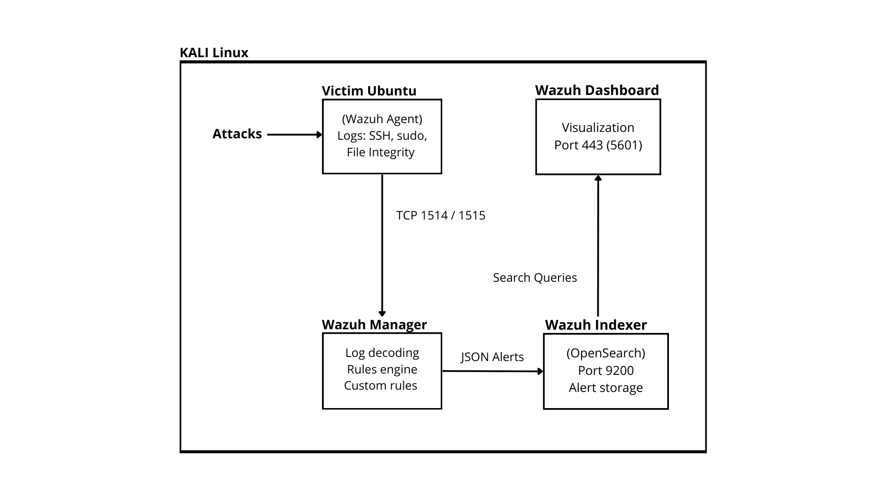
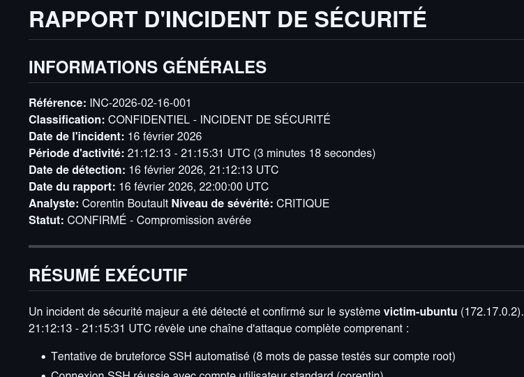
Wazuh SOC Lab — Detection & Response
Simulation complète d'un environnement SOC sous Docker : déploiement d'un SIEM Wazuh, onboarding d'endpoints, simulation d'attaques réalistes, règles de détection custom et rapport d'incident professionnel.
Wazuh
Docker
SIEM
Linux
SOC
Cybersécurité
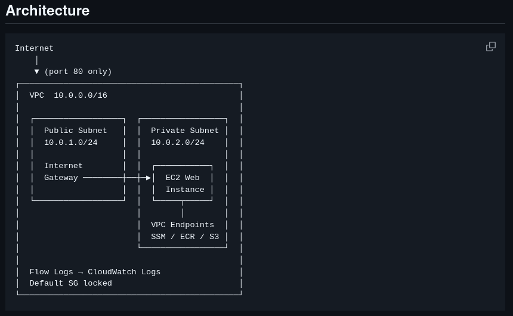
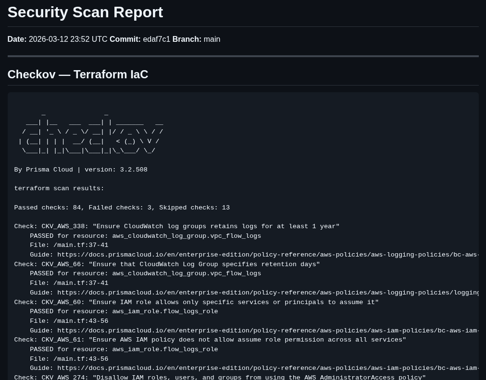
DevSecOps IaC — AWS Security Pipeline
Infrastructure AWS provisionnée avec Terraform, sécurisée dès la CI/CD via Checkov, tfsec et Trivy. Zéro exposition SSH, scan bloquant, déploiement automatisé et rapport de sécurité généré automatiquement.
Terraform
AWS
GitHub Actions
Docker
Checkov
Trivy
Cybersécurité
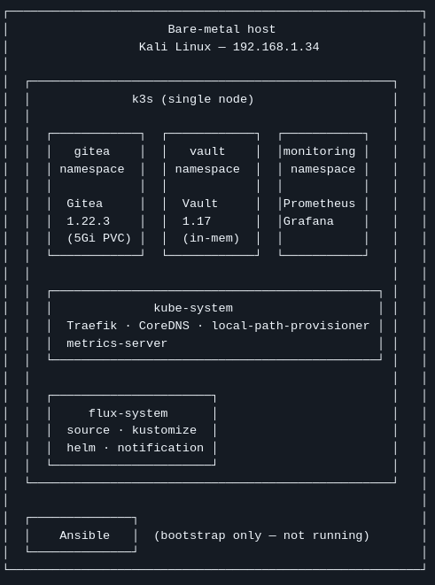
k8s Self-hosted Platform — GitOps & Secrets
Plateforme Kubernetes auto-hébergée sur cluster k3s single-node, provisionnée avec Ansible et pilotée par Flux CD en mode GitOps. Services production (Gitea, Vault, Prometheus/Grafana), isolation par namespace, NetworkPolicy et scénarios de chaos testing reproductibles.
Kubernetes
k3s
Ansible
Flux CD
Vault
GitOps
Bureau des Sports
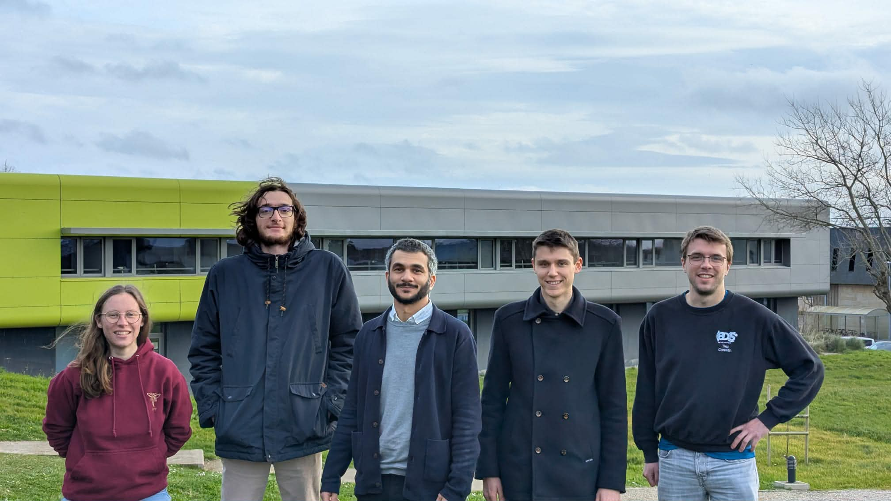
Bilan Carbone — Atlanticup
Mesure et analyse de l'empreinte carbone d'un événement sportif majeur réunissant plus de 800 participants, en partenariat avec Oresys. Résultats présentés devant 200 personnes avec des recommandations concrètes pour les futures éditions.
Bilan Carbone
Présentation
Développement Durable
800 participants
Bureau des Sports

Trésorier — Bureau des Sports IMT Atlantique
Gestion de la trésorerie générale du BDS sur l'année 2023-2024 : budget prévisionnel, suivi des dépenses, coordination des inscriptions pour plus de 100 participants aux compétitions majeures (TOSS, CCL, Atlanticup), pilotage du budget Atlanticup (~20 000€), organisation d'événements sportifs locaux et rédaction du dossier de passation. Environ 8h par semaine.
Trésorerie
Budget ~20k€
Gestion de projet
Événementiel
150h+
IA / ML
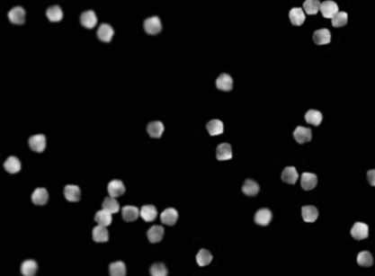
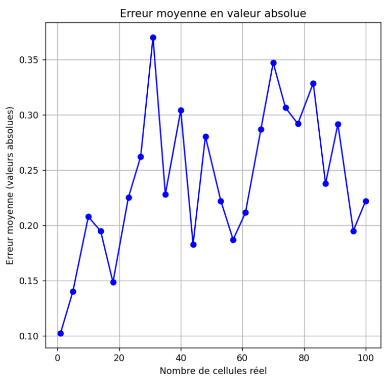
Cobalt — Comptage Cellulaire par Deep Learning
Automatisation du comptage de cellules dans des échantillons biologiques à l'aide de techniques de deep learning, en collaboration avec l'entreprise Cobalt. Un vrai problème de vision par ordinateur appliqué au milieu scientifique.
Deep Learning
Computer Vision
Python
IA / ML
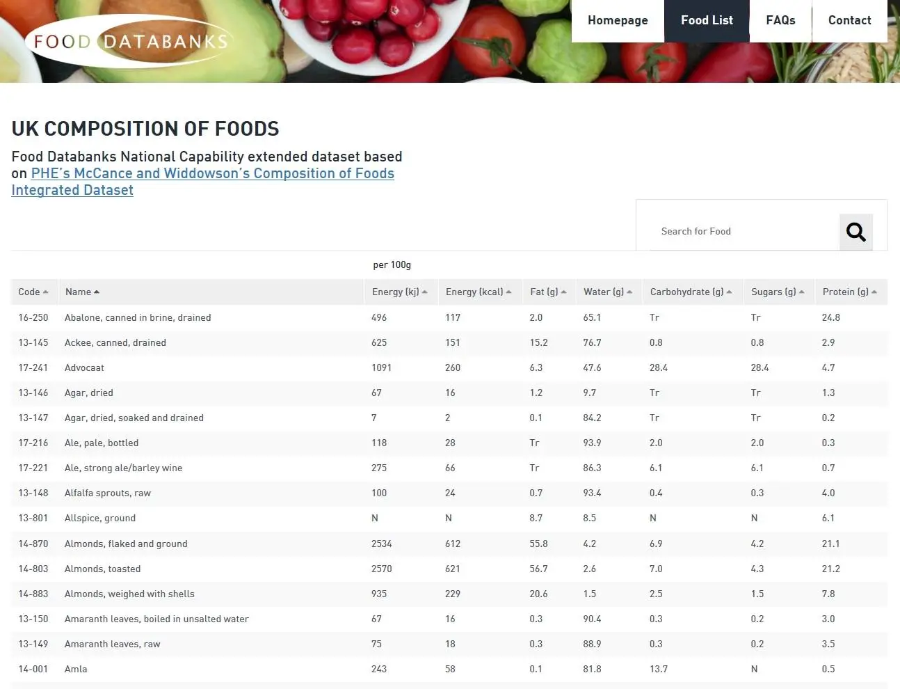
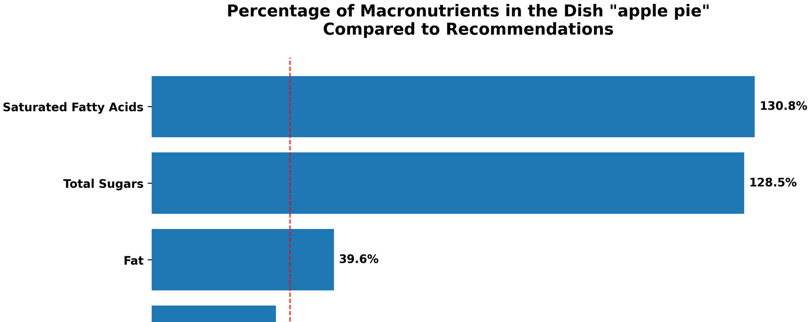
Assistant Cuisine par LLM
Module de parsing de recettes, de correspondance d'ingrédients et d'analyse nutritionnelle. Exploite des technologies NLP pour enrichir des recettes à partir de texte libre et fournir un bilan nutritionnel complet.
NLP
LLM
Python
Processing
IA / ML
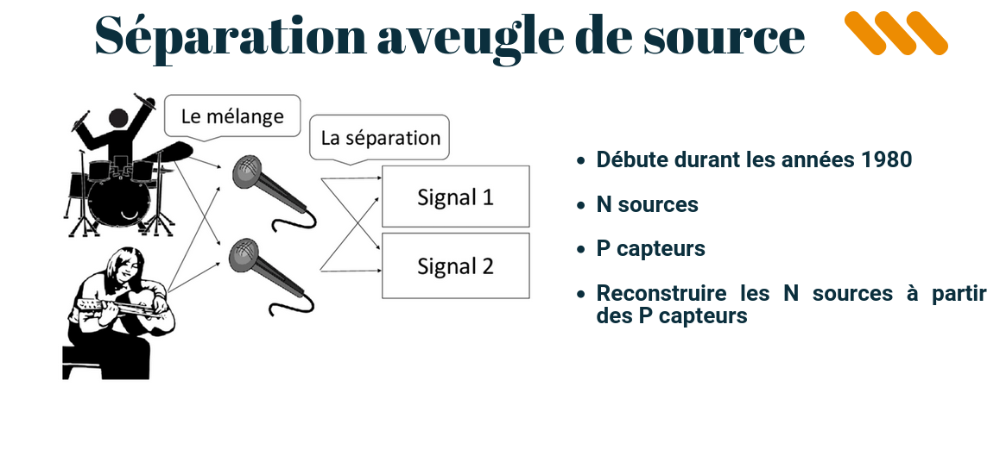
Séparation Aveugle de Sources Sous-Déterminée
Implémentation de deux méthodes de séparation de sources : Sparse Source Recovery par minimisation contrainte et CAGCMM. Extraction de signaux indépendants à partir de mélanges sans connaissance a priori.
Signal Processing
CAGCMM
Python
Optimisation
IA / ML
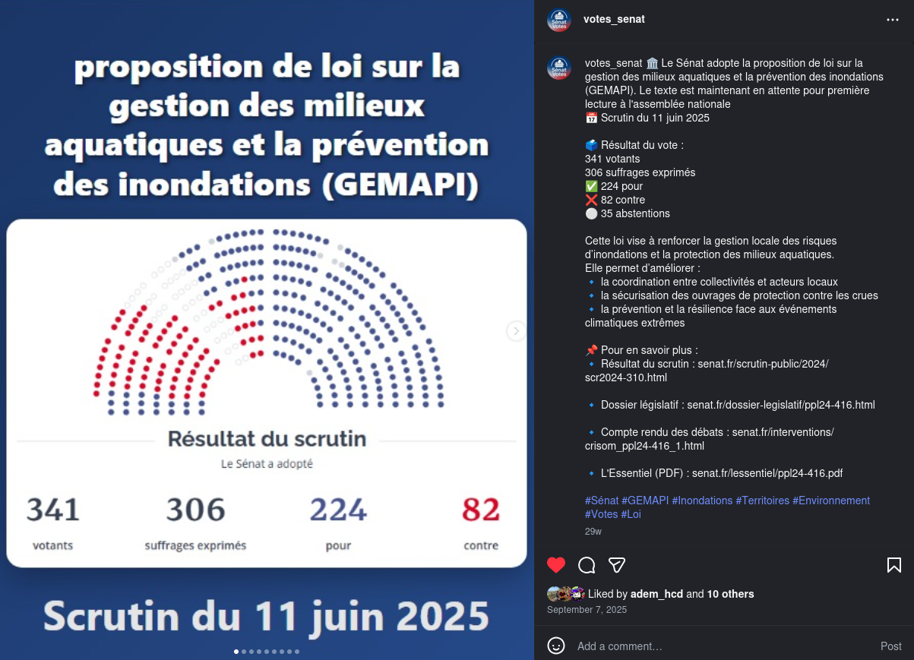
Votes du Sénat — Vulgarisation Politique
Compte Instagram de vulgarisation politique, neutre et indépendant. Traitement semi-automatisé des données de vote sénatorial pour les rendre accessibles au grand public. 169 abonnés, 8 publications.
NLP
Data
Open Data
Vulgarisation